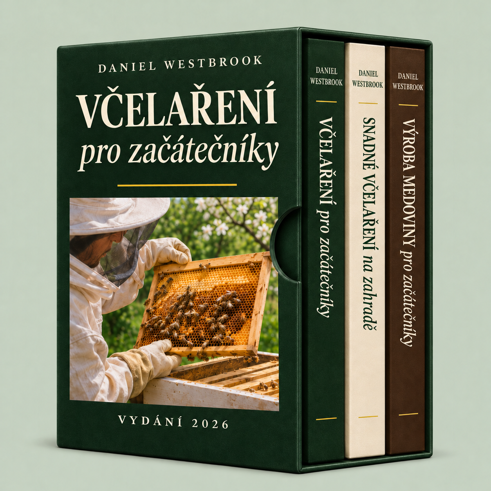

KOLEKCE DANIELA WESTBROOKA
Od prvního včelstva k vlastnímu medu.

Pochopit. Pozorovat. Růst.
TVÁ ČLENSKÁ SEKCE
Tvé dobrodružství
Tvé dobrodružství
se včelami
začíná tady.
Jsme rádi, že jsi tady. Objev svět včel se znalostmi, které tě provedou od prvního kroku.
TVÁ OSOBNÍ KNIHOVNA
Vstoupit do členské sekce
Pochop základy. Včelař na vlastní zahradě. Objev výrobu medoviny.
Všechny tři knihy můžeš číst online nebo stáhnout jako PDF.
- 3
- Knihy
- 180
- stran znalostí
- Tvé tempo
- Pro začátečníky